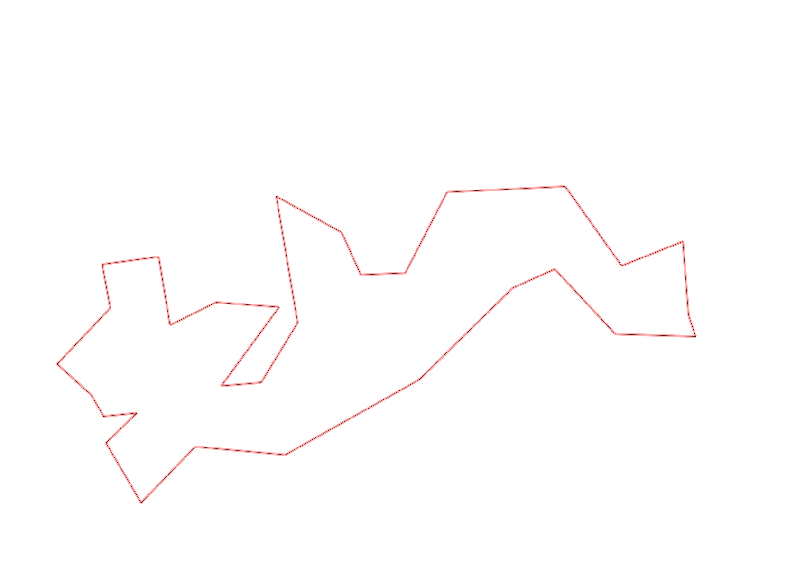
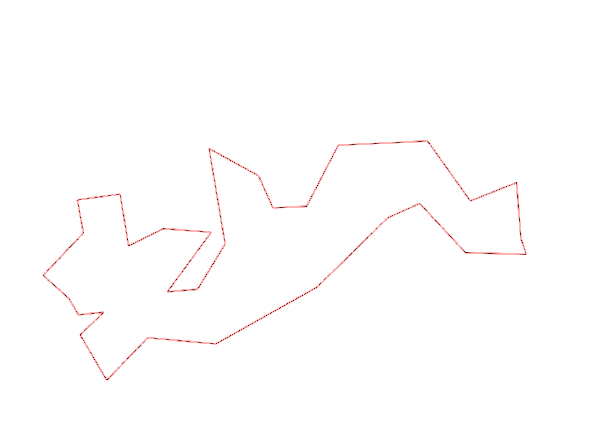

| Control |
Points |
Time Punched |
Distance |
Your Time |
Pace |
Place |
Fastest Time |
Median Time |
% Behind Fastest |
| 126 |
20 |
|
0.17 |
0:00:46 |
04:30 |
3 / 10 |
0:00:43 |
0:00:53 |
6% |
| 130 |
30 |
|
0.14 |
0:00:22 |
02:37 |
4 / 19 |
0:00:00 |
0:00:33 |
-% |
| 63 |
60 |
|
0.18 |
0:01:13 |
06:45 |
1 / 5 |
0:01:13 |
0:01:18 |
0% |
| 32 |
30 |
|
0.15 |
0:00:40 |
04:26 |
2 / 27 |
0:00:36 |
0:00:56 |
11% |
| 44 |
40 |
|
0.12 |
0:00:52 |
07:13 |
1 / 29 |
0:00:52 |
0:01:49 |
0% |
| 53 |
50 |
|
0.2 |
0:02:00 |
10:00 |
11 / 26 |
0:01:31 |
0:02:15 |
31% |
| 69 |
60 |
|
0.12 |
0:00:58 |
08:03 |
5 / 29 |
0:00:45 |
0:01:18 |
28% |
| 71 |
70 |
|
0.06 |
0:00:58 |
16:06 |
6 / 25 |
0:00:48 |
0:01:13 |
20% |
| 41 |
40 |
|
0.09 |
0:01:00 |
11:06 |
2 / 8 |
0:00:47 |
0:01:39 |
27% |
| 40 |
40 |
|
0.11 |
0:00:45 |
06:49 |
1 / 24 |
0:00:45 |
0:01:00 |
0% |
| 77 |
70 |
|
0.18 |
0:01:43 |
09:32 |
4 / 21 |
0:01:35 |
0:02:21 |
8% |
| 59 |
50 |
|
0.21 |
0:02:24 |
11:25 |
4 / 18 |
0:02:00 |
0:02:47 |
20% |
| 61 |
60 |
|
0.24 |
0:04:08 |
17:13 |
16 / 19 |
0:02:14 |
0:03:16 |
85% |
| 37 |
30 |
|
0.4 |
0:04:04 |
10:10 |
2 / 6 |
0:03:20 |
0:04:58 |
22% |
| 64 |
60 |
|
0.34 |
0:04:26 |
13:02 |
2 / 2 |
0:03:49 |
0:04:07 |
16% |
| 49 |
40 |
|
0.12 |
0:00:55 |
07:38 |
1 / 12 |
0:00:55 |
0:01:28 |
0% |
| 46 |
40 |
|
0.23 |
0:02:13 |
09:38 |
3 / 8 |
0:02:06 |
0:02:39 |
5% |
| 75 |
70 |
|
0.21 |
0:03:57 |
18:48 |
6 / 7 |
0:02:06 |
0:02:33 |
88% |
| 56 |
50 |
|
0.06 |
0:00:41 |
11:23 |
5 / 8 |
0:00:25 |
0:00:39 |
64% |
| 81 |
80 |
|
0.19 |
0:01:17 |
06:45 |
4 / 7 |
0:00:54 |
0:01:17 |
42% |
| 52 |
50 |
|
0.17 |
0:01:13 |
07:09 |
2 / 6 |
0:01:09 |
0:01:25 |
5% |
| 109 |
100 |
|
0.26 |
0:01:36 |
06:09 |
2 / 9 |
0:01:20 |
0:02:00 |
20% |
| 123 |
20 |
|
0.31 |
0:02:11 |
07:02 |
2 / 10 |
0:01:36 |
0:02:50 |
36% |
| 47 |
40 |
|
0.24 |
0:02:49 |
11:44 |
2 / 6 |
0:02:32 |
0:03:41 |
11% |
| 92 |
90 |
|
0.12 |
0:03:18 |
27:30 |
7 / 10 |
0:01:21 |
0:03:13 |
144% |
| 57 |
50 |
|
0.12 |
0:02:48 |
23:20 |
2 / 9 |
0:01:59 |
0:05:37 |
41% |
| 107 |
100 |
|
0.2 |
0:02:03 |
10:15 |
3 / 21 |
0:00:00 |
0:02:52 |
-% |
| 127 |
20 |
|
0.34 |
0:03:04 |
09:01 |
1 / 1 |
0:03:04 |
0:03:04 |
0% |
| 38 |
30 |
|
0.18 |
0:01:20 |
07:24 |
3 / 13 |
0:01:04 |
0:01:50 |
25% |
| 60 |
60 |
|
0.11 |
0:00:43 |
06:30 |
2 / 19 |
0:00:42 |
0:00:57 |
2% |
| Finish |
0 |
|
0.26 |
0:01:17 |
04:56 |
1 / 3 |
0:01:17 |
0:02:32 |
0% |
Total Distance Covered: 5.83km
Points Scored: 1550
Late Penalty: 0
Final Score: 1550
Total Time: 0hours 57minutes 44seconds
Efficiency: 265.87 points/km
 
